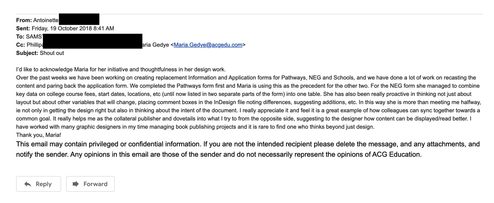

8 September 2020
Two weeks before I started at DA I had to make the tough decision to end a serious relationship and to go through a pregnancy termination due to multiple boundaries and values being disregarded over a long period of time. It was tough because I didn’t want to give up on my partner or the baby and the consequences for those decisions was a lot of emotional pain, loss of a partner and best friend, and loss of a child which was extra hard as I already have three beautiful children. But, if I didn’t go through with that decision, my own mental health and stability was very much at risk as my partner’s ‘baggage’ was becoming extremely demanding and burdening as the months passed by. I have no regrets because if I didn’t take action, I would still be struggling to be the kind of mother, student, and adult I am striving to be.
I was raised by a single caucasian father who worked all his life(still is!) - he is the kind of man who’d work in his sleep if he could. He would always recite things like “life is bloody hard work, if you want to get anywhere in life you gotta earn your way” and similar lines like that. Typical baby boomer. He also said liars were worse than thieves so I attribute the honesty value to my father as well. Unfortunately I had a lot of conflict with father and stepmother in my early teens which led me to run away and look for my mother who I had lost contact with over a period of 10 years. Anyway, after reconnecting and learning fa’a Samoa (the Samoan way) which completely contradicted my father’s way of things, I took on new values - family and altruism. My mother was more of a comedian than a wise guy, but she taught me so much about unconditional love and support. Even today, our relationship is 100x stronger than the one with my father.
I think my strengths make me a good team player which I’ve noticed from great feedback I’ve received over the years from managers, colleagues and even a CEO. Evidence for an example of this would be a ‘shout out’ email from an old colleague and friend.
Tolerance is a good strength to help with my learning journey as it helps me recognise the importance of listening to other opinions, even when they contradict with my own.
At my last job I had unknowingly built up tension and resentment towards my manager and myself because I took on too much work and struggled to say no, multiple times over a couple years. I often underestimate myself at the start of something new, although I was quick to make an impression on my boss through being a quick learner and excellent multitasker. I was hardworking, reliable and eager to help – but my strengths became a double-edged sword, as my manager ended up taking advantage of my character by making too many requests and overburdening me with extra work(late nights were the norm!). My strategy was to avoid conflict and to try avoid unnecessary criticism, by accepting extra tasks in an attempt to maintain a positive impression and frictionless environment. This proved to not be effective(long term) as only one of us was satisfied. After reflecting on that experience, if I was to find myself going into a similar situation I would revisit my weaknesses to find an answer. In this case, not being afraid to say no or pushback, despite receiving criticism. Even if I do receive criticism, I would really try hard to not take it too personally and not let my self-confidence plummet from not being able to help. I would try those things so that I don’t end up resenting my boss or whoever was affecting me and I think it’s important to not neglect my own needs and to stand up for myself when it’s necessary. Also it ties in with my value of honesty, because my boss didn’t really know what was going on in my brain lol.
Previous blog